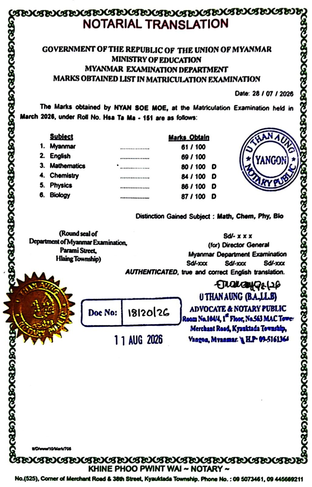
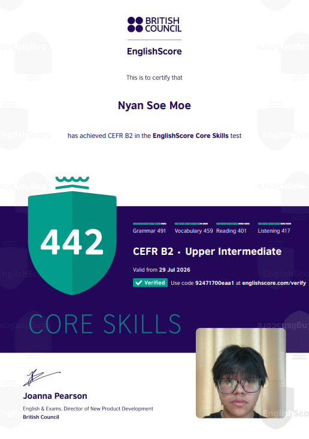
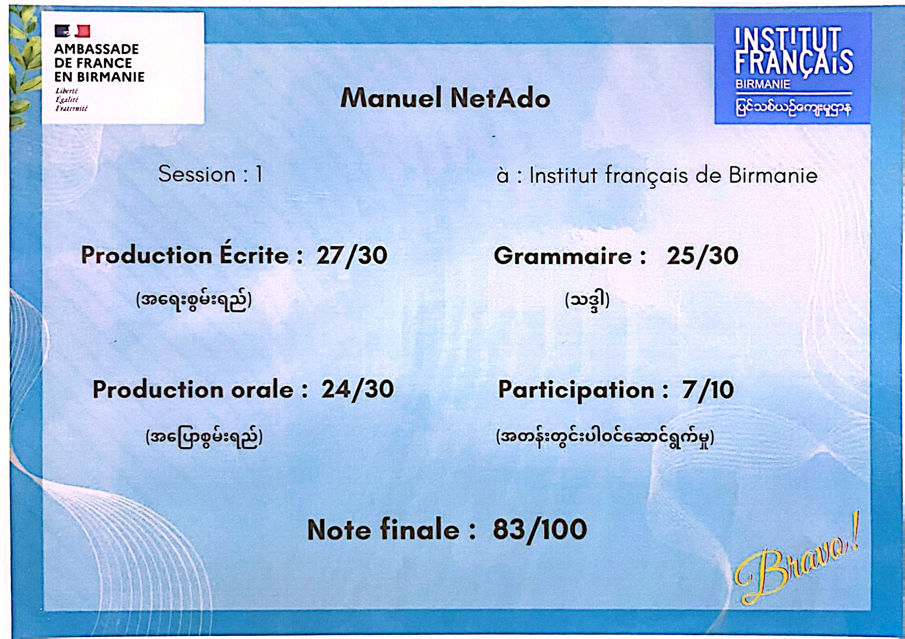

Academic Achievements

Myanmar Matriculation Examination — 4 Distinctions (2026)
I achieved four distinctions in Mathematics, Chemistry, Physics, and Biology in the Myanmar Matriculation Examination, with scores of 80 or above. This achievement represents the hard work, discipline, and consistency I put into my studies.

English Language — CEFR B2 (2026)
I achieved a CEFR B2 level in the British Council EnglishScore test. Improving my English has helped me communicate more confidently and prepared me for studying in an international environment.


French Language (2019-2022)
In 2019, I was given the opportunity to study French for free at BEHS (1) Dagon after ranking among the top 30 students in my Grade 7. I later continued my studies in a higher-level French class and successfully completed the course, receiving a certificate with a final score of 83/100.